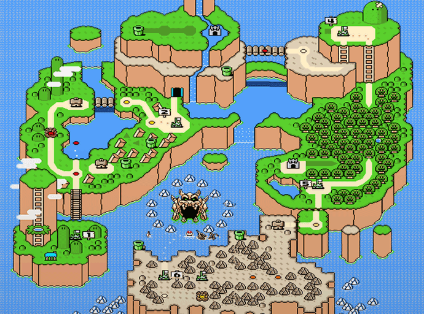
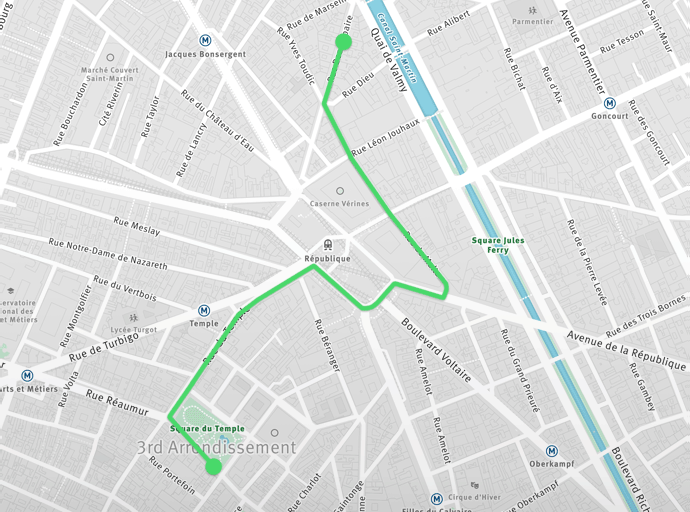

Museum of Football
11 N. Way St, Madison, WI 53703
Institute of Fine Cocktails
14 S. Hop Avenue, Madison, WI 53703

Yoshi's Island
Iggy Koopa
Forest of Illusion
Roy Koopa

Museum of Information
44 Rue de Info, 75010 Paris, France
General Pharmacy
1 Avenue Faux, 75010 Paris, France